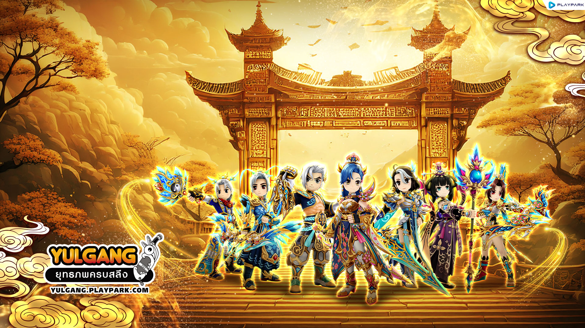

Reshape the culture. Rewrite the game.
Yulgang is a long-standing MMORPG developed by MGame, operated in Vietnam by VTC. Yulgang Private refers to unofficial, community-run servers built on Yulgang's original source code — each with its own design philosophy and operational strategy.
I entered the Yulgang private scene in 2017 as a dedicated player. By 2018, I had moved through QA/QC into an official partner role — and ultimately took full ownership of game design and product decisions.
When I arrived, every Yulgang private server followed the same formula — same systems, same events, same player loops. Innovation was absent. The result was rapid churn and a community increasingly bored of a game they still loved.
I carried two core principles into this work: challenge outdated gaming mindsets, and treat each iteration as an A/B test. This meant doing what others didn't dare — and being willing to fail publicly, and loudly, before finding what worked.
Each phase represented a fundamentally different design philosophy — and together, they shaped how I think about game design today.
My early servers focused on recalibrating ratios, stats, and in-game values to create a more engaging experience than the original. Incremental. Precise. Player-tested.
Radical experimentation — modifying Yulgang's core to embed ideas from Phong Thần, Võ Lâm, Kiếm Thế, MU, and Laplace M. This phase was about creating new experiences, not improving existing ones.
Not a feature list — a set of observations turned into design.
This is the clearest example of what I believe game design is: not inventing from scratch, but seeing what's already there — and understanding it better than anyone else in the room.
📊 From 2023, an estimated 80% of Vietnamese private servers adopted dungeon-based resource distribution. This server set the pattern.
🏆 In 2021 — three years after this server — Yulgang Official introduced a similar level-160 upgrade system. The private server had designed ahead of the official game.
Expanded the original 4-slot costume system into a richer stat diversity — from basic attributes to unique character-specific abilities.
Introduced territorial upgrades, time-limited member buffs, and resource sinks — transforming guilds from labels into ecosystems with strategic depth.
First server in Vietnam to implement rebirth. Built accompanying activities to gather materials, extending endgame and creating fresh progression loops.
Beyond the numbers, the most meaningful result was cultural: I successfully shifted the traditionally conservative Yulgang player base toward accepting new systems and a fundamentally different vision of what the game could be.
For a community known for resisting change — that was the hardest metric to move.
The Circulatory Quest didn't come from a design sprint. It came from watching a mistake and seeing what others missed. The best insight I've had came from paying attention.
No document predicts how players will actually interact with a system. The Dungeon redesign worked because I watched auto-botting long enough to understand the root cause — not just the symptom.
Both the Celestial-Demonic system and the Dungeon model were adopted later by the broader community. That wasn't luck — it was designing toward where the game needed to go, before the market agreed.